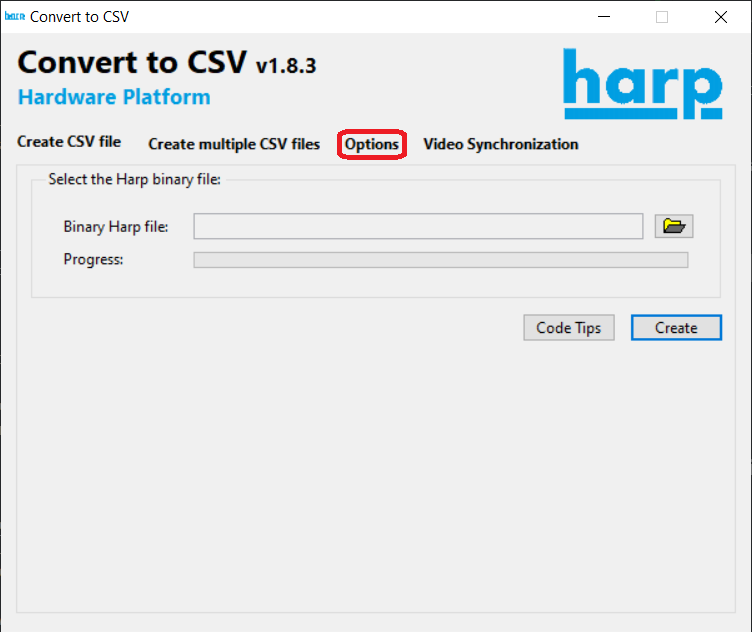
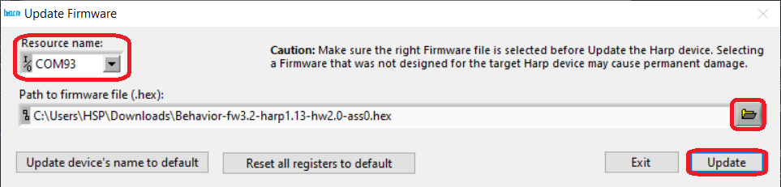

Harp Devices Setup
In order to use the Harp devices, the USB drivers and each devices's firmware must be installed. The installer for the USB drivers can be downloaded here. The Firmware section contains the instructions for installing each board's firmware.
Note
The Harp devices are usually delivered with the firmware already installed, but it may be useful to know how to install the firmware (for example: in case a new firmware version that solves a particular bug is released)
Firmware Installation
If the Harp Convert to CSV GUI is already installed, skip to step 3. If it's not already installed, but other Labview-based Harp board GUI is, skip to step 2 instead.
Install the LabView Runtime and reboot the computer.
Install the Harp Convert to CSV GUI.
Open the application. Then, click on
Options.
Write "bootloader" in the
Listtextbox. TheUpdate Firmwarewindow should appear.
Choose the serial port (COMx) of the board and the corresponding firmware binary (
.hexfile). Then, click onUpdate.
For the Harp SoundCard: during the installation of the firmware, select the PIC32 firmware when the application asks for the 32 bits device firmware (
SoundCard.X-fw2.0-harp1.4-hw2.2-ass0.hex).
Firmware Versions
You can find the firmware versions currently being used in the table below.
| Device | Firmware Version | Harp Core Version | Hardware Version | PIC32 Firmware |
|---|---|---|---|---|
| Harp Behavior | v3.2 | v1.13 | v2.0 | - |
| Harp SoundCard | v2.3 (Custom) | v1.4 | v2.2 | v2.3 (Custom) |
| Harp ClockSynchronizer | v1.0 | v1.13 | v1.0 | - |
| Harp SyringePump | v1.0 | v1.13 | v1.1 | - |
| Harp CurrentDriver | v0.4 | v1.13 | v1.1 | - |
Note
The source code for the custom firmware of the Harp SoundCard can be found here.